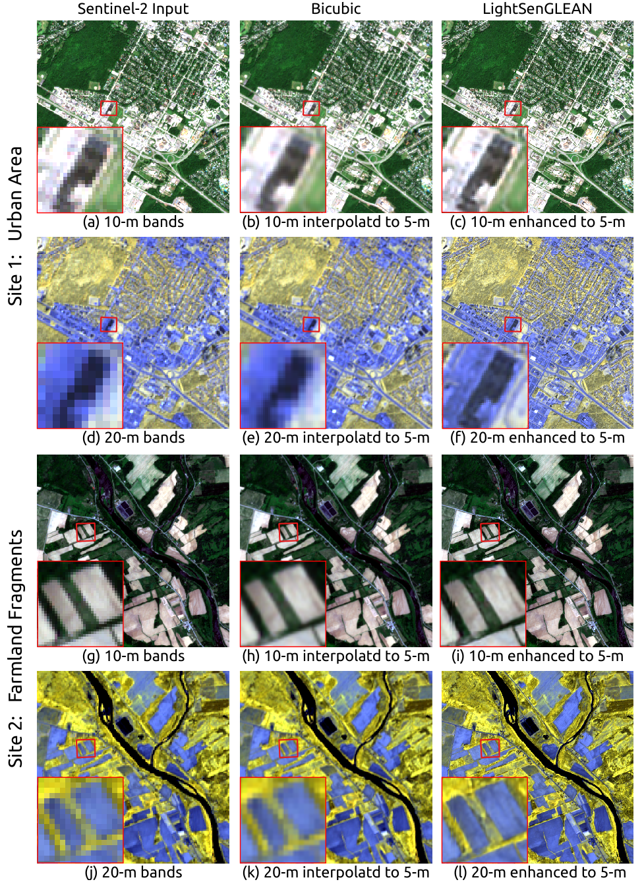

Sentinel-2 data is highly valuable in remote sensing applications owing to its open accessibility and comprehensive spatial-temporal coverage. However, it poses a unique challenge due to its varying spatial resolutions across its different spectral bands (ranging from 10-m to 60-m). High-resolution data offers finer details and significantly enhances the accuracy of analyses, benefiting a wide range of fields. The majority of current methods for enhancing Sentinel-2 image resolution do not address the enhancement of all bands through a unified network. To address this issue, we propose a novel deep learning-based solution named SenGLEAN, for enhancing multi-resolution bands (specifically, 10-m and 20-m Ground Sampling Distance - GSD) to a unified 5-m GSD. SenGLEAN leverages the concept of Generative LatEnt bANks (GLEAN) and employs a multi-resolution encoder-bank-decoder architecture to achieve high-resolution remote sensing imagery. Notably, our model incorporates channel-attention (CA) and pixel-attention modules (PA) within its design to enhance the spatial quality of results. Through quantitative comparison, we demonstrate that our network shows significant improvements, by increasing the PSNR by 0.28 dB for 10-m bands and 2.92 dB for 20-m bands while reducing the RMSE by 3.11 for 10-m bands and 52.26 for 20-m bands. Furthermore, we introduce a lightweight variant, LightSenGLEAN, retaining critical components while reducing total parameters by 81.89%, which still offers competitive performance. In summary, our proposed model provides an efficient solution to enhance both 10-m and 20-m Sentinel-2 bands to 5-m resolution using a single deep learning framework, facilitating precise image analysis and geoscience applications.

@article{Gupta2024senglean,
author = {Gupta, Ayush and Mishra, Rakesh and Zhang, Yun},
journal = {IEEE Transactions on Geoscience and Remote Sensing},
title = {SenGLEAN: An End-to-End Deep Learning Approach for Super-Resolution of Sentinel-2 Multi-Resolution Multispectral Images},
year = {2024},
doi = {10.1109/TGRS.2024.3374575}
}